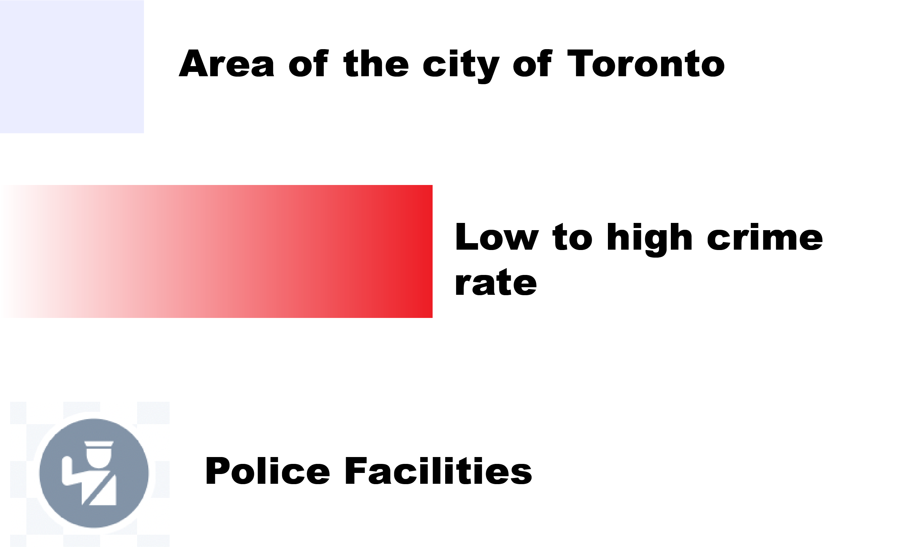
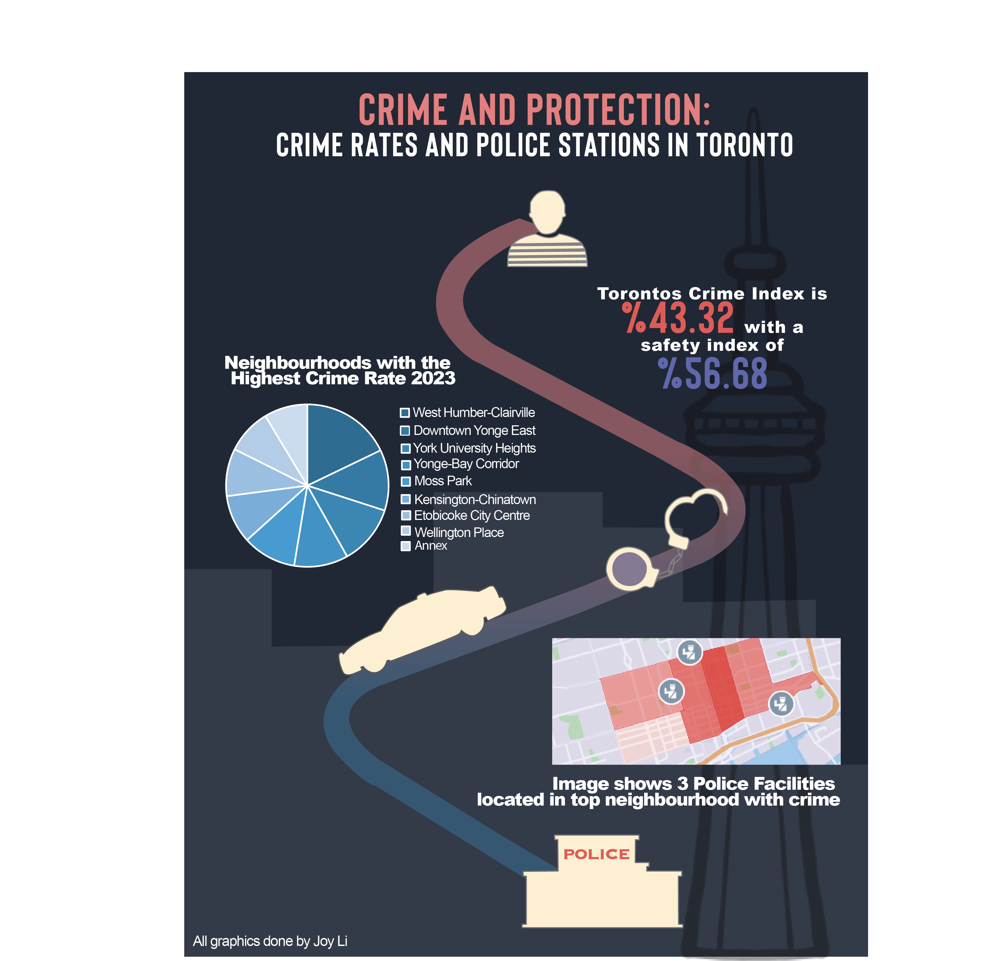

MapBox:
Below is the mapbox created to visualize the location of police facilities and the top 10 neighbourhoods with the highest crime rates.


GBDA 303 Assignment 1
Below is the mapbox created to visualize the location of police facilities and the top 10 neighbourhoods with the highest crime rates.